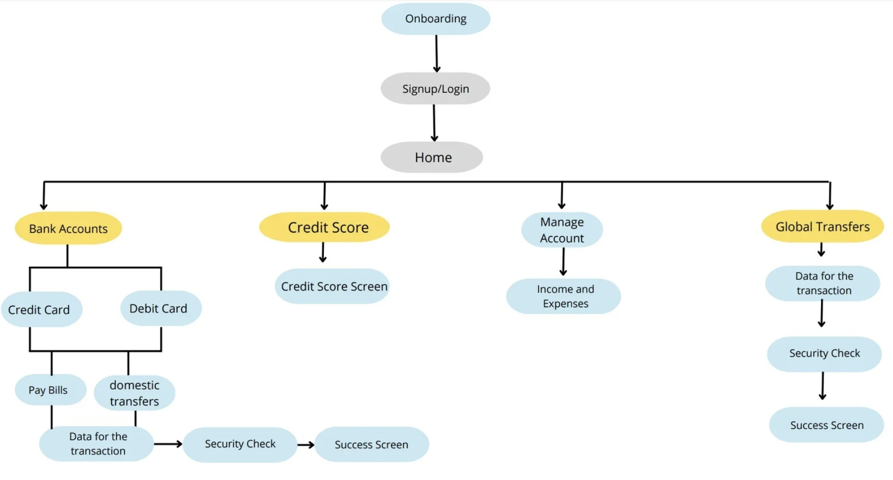
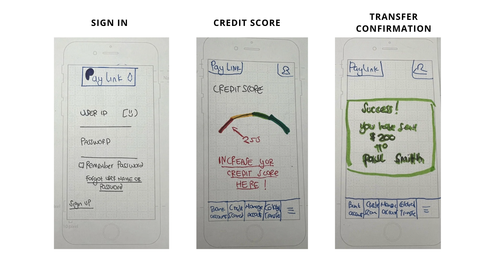

PayLink
Overview
PayLink is a comprehensive financial app that seamlessly integrates international and domestic money transfers, finance account management, credit score tracking, expense and income tracking, and a convenient card-saving feature. With its user-friendly interface and robust security measures, PayLink empowers individuals to efficiently manage their finances and make informed decisions. This all-in-one platform fosters financial confidence and convenience.
Project Overview
PayLink is a comprehensive financial app that seamlessly integrates international and domestic money transfers, finance account management, credit score tracking, expense and income tracking, and a convenient card-saving feature. With its user-friendly interface and robust security measures, PayLink empowers individuals to efficiently manage their finances and make informed decisions. This all-in-one platform fosters financial confidence and convenience.
The Problem
Small businesses and freelancers often struggle to collect payments efficiently without the complexity of setting up an online store or a formal invoicing system. Many rely on cumbersome, manual processes, which can delay payments and lead to errors. There is a need for a simple, secure, and flexible solution to request and receive payments quickly, without technical barriers for either the business or the customer.
The Goal
To design an easy-to-use, secure platform for both businesses and individuals to generate and share payment links, making the payment process quick and convenient for everyone.
Competitive Analysis
Our competitive analysis of payment link solutions highlights key strengths and gaps in existing offerings, guiding us in refining Paylink to better serve both businesses and individuals with a streamlined payment experience.

PayPal:
- Widely recognized and trusted for online payments.
- Supports credit/debit cards, bank transfers, and PayPal balances.
- Compatible with various e-commerce platforms and apps.
- Offers strong encryption and fraud protection.
WolrdRemite:
- Facilitates fast and secure money transfers across many countries.
- Supports bank transfers, mobile money, airtime top-ups, and cash pickups.
- Offers an intuitive online platform and mobile app for easy transactions.
- Provides transparent and often lower fees compared to traditional remittance services.
User research
To better understand my potential users I conducted the research with an interview of five individuals Males and Females, ages 30-45. The interviews offered a private and relaxed environment, allowing participants to express their opinions openly.
The one-on-one format provided flexibility in exploring specific nuances of their experiences with Finance apps, including any challenges they faced and the aspects they found most beneficial.
- Users appreaciate the transparency in fees in a money transfer App
- Security and privacy emerged as critical factors incluencing participants' trust in the app
- Participants displayed a diverse range of financial habits, reflecting different levels of reliance on financial apps
User personas
To guide our Project better, and understand our potential Users, we use the information from the research to create the User Personas. Please check below one example:
Amelia Thompson
Edad: 35
Gender: Female
Location: NYC,US
Needs and Goals:
Frustrations
Sitemap
Low fidelity wireframes
Usability testings
After running the usability test for the PayLink banking app, it provided valuable insights into its strengths and areas for improvement:
Key insights
- Difficulty in finding the path to send money
- Uncertainty in choosing options within the 'Manage Account' section
By incorporating these findings into future app iterations, PayLink can continue to empower users to manage their finances efficiently and confidently and make informed decisions.
Click below to open the Propototype:
Impact
Simplified Transactions: Paylink streamlines the payment process, making it easy for businesses and individuals to generate and share payment links with just a few clicks, thereby reducing the complexity of traditional payment methods.
Enhanced Accessibility: Users can create and manage payment links from any device with internet access, allowing them to facilitate transactions anytime, anywhere, without needing specialized software.
Efficient Payment Collection: By providing a straightforward interface for generating payment links, Paylink helps users efficiently collect payments and manage transactions, making financial processes smoother and more transparent.
Customizable Payment Options: Paylink allows for customization of payment links, including adding descriptions and setting amounts, which helps users tailor their payment requests to specific needs.
Next steps
To enhance Paylink further, we plan to expand payment methods by supporting a broader range of currencies and payment options, develop a mobile app version for easier management on the go, and implement additional security features such as two-factor authentication and encryption to safeguard user data. Additionally, we will continuously gather and analyze user feedback to refine features and address any issues, ensuring the app remains user-friendly and effective in meeting the needs of its audience.